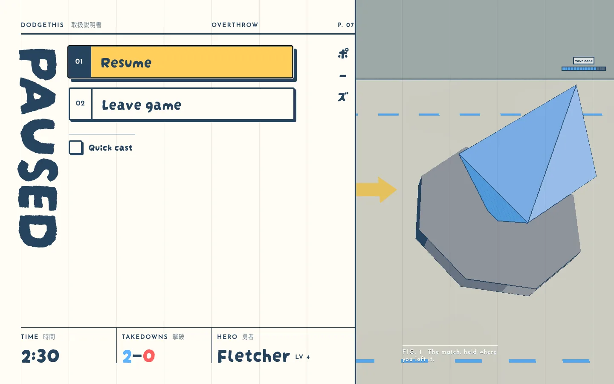

Pause: manual with vertical PAUSED
To review · 2026-10-10 · thr_ra883cf55x
Manual is now the only pause page, with PAUSED running down the first column. Right weight and place?

To review · 2026-10-10 · thr_ra883cf55x
Manual is now the only pause page, with PAUSED running down the first column. Right weight and place?
